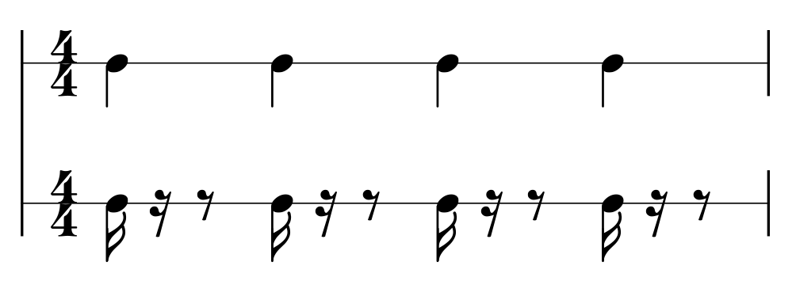

Distributed Groove Theory
Building on Metadivision Theory, I propose a new rhythm theory that goes beyond the limits of metre and polyrhythm and describes hierarchical, dynamic temporal structures.
Introduction
Here I will explain the theoretical background of rhythm sense and offbeats. Rhythm sense refers to the ability to perceive divided time, that is, to ride it, and the ability to divide time into equal intervals, that is, to strike it. This ability plays a very important role in musical performance. But humans are not quartz oscillators, so various constraints apply.
- Constraint 1: Humans can only strike at constant periodic intervals
- Constraint 2: Humans cannot strike very fast
- Constraint 3: Humans can almost never strike perfectly accurately
- Constraint 4: However, by combining two movable parts such as the hands or feet, humans can strike at double speed
- Constraint 5: What applies to riding also applies to striking
Here I will call this the Limitation of the Human Sense of Subdivision. Seen as a rhythm-performing device, a human being is a very simple machine. To make music, we have no choice but to improvise with this device, combine its functions, and use it carefully. The act of playing complex rhythms contains a fundamental algorithmic problem. Let us think about how music should be performed using such a device.
And we will see that this is precisely the essence of how African American music, that is, gospel, Black church music, R&B, funk, hip-hop, and jazz, handles rhythm.
Simple Rhythms and Complex Rhythms
When striking rhythm, it is very important to understand Constraint 1, that humans can only strike at constant periodic intervals. Suppose there is a complex rhythm like this.
Humans cannot strike this rhythm directly, because humans possess only the ability to divide time into constant cycles. But with the following device, it can be struck.
Because it is hard to see on the score that this is a combination of constant cycles, let us look at it using a graph.
Now it is a combination of constant cycles, so even humans can strike it. This is how humans are able to perform complex rhythms.
Any complex rhythm can always be decomposed according to fixed laws and re-expressed as a combination of simple constant-period rhythms. Because humans can play only simple rhythms, to play complex rhythms we must first decompose them into combinations of simple rhythms. There are multiple ways to perform this conversion, and different conversions yield different nuances.
I call this transformation Rhythm Decomposition.
Here, a rhythm made from only one cycle will be called a simple rhythm, and a rhythm compounded from two or more cycles will be called a complex rhythm.
Decomposing a Simple Rhythm
Let us consider Constraint 2, that humans cannot strike very fast.
Consider the following simple rhythm.
At around 120 BPM it is easily playable. But at 200 to 300 BPM it gradually becomes difficult. If we consider finer note values such as eighth notes and sixteenth notes, then at 200 BPM, playing eighth notes means striking at an effective 400 BPM, and sixteenth notes reach 800 BPM. This is clearly a rhythm that humans cannot strike directly.
So let us think about decomposing it.
Even the exact same rhythm can be performed at half the BPM if it is decomposed in this way. Let us confirm this with a graph as well.
I call this process decomposition of a simple rhythm.
Decomposed Simple Rhythm and Beat-Shifting Distance
In the previous section we saw that by decomposing a simple rhythm, it can be performed at double speed. In fact, by changing the distance between the two beats, rhythms other than doubling can also be performed. I call this distance Beat-Shifting Distance.
In the previous example, the distance between the two beats was 1/2. What would happen if it were 1/4?
When the distance between the two beats becomes 1/4, it has the same fineness as a note with length 1/4, that is, an eighth note.

Let us likewise see what happens if the distance between the two beats becomes 1/3.
When the distance between the two beats becomes 2/3, it has the fineness corresponding to two notes of a triplet spread across two beats.
Here I call the fineness of note placement Beat Resolution. In this way, by changing the distance between the two beats, that is, the Beat-Shifting Distance, all beat resolutions can be expressed. But what is beat resolution?
What Is Beat Resolution?
Beat resolution is the fineness of note positions within the measure. It is related to the felt speed of rhythm. The higher the beat resolution, the faster the rhythm feels. Beat resolution resembles note value, that is, note length, but it is a different concept. Note value refers to the length of a note, whereas beat resolution refers to the fineness of note positions within the measure.
More concretely, when the positions of all notes in a measure are expressed numerically, beat resolution is the greatest common divisor of all those values. For example, even if there are sixteenth notes whose note value is 1/16, the beat resolution is not necessarily 1/16. If those sixteenth notes all occupy the same positions as quarter notes, the beat resolution is only 1/4.
Example 1

If all the sixteenth notes occupy the same positions as quarter notes, the beat resolution is the same as that of quarter notes.
These sixteenth notes have only the same beat resolution as quarter notes.
Here the positions of the quarter notes are [ 0/4, 1/4, 2/4, 3/4 ], and the positions of the sixteenth notes are [ 0/16, 4/16, 8/16, 12/16 ]. In this case the greatest common divisor of all the numbers is 1/4. Therefore, the beat resolution is 1/4.
Example 2
In Example 2, the positions of the half notes are [ 0/2, 1/2, 3/2, 4/2 ] and the positions of the eighth notes are [ 3/8, 7/8, 11/8, 15/8 ], so the greatest common divisor is 1/8. Therefore the beat resolution is 1/8.
The smaller the value, the higher the beat resolution. The higher the beat resolution, the faster the rhythm feels.
In other words, Example 2 can be said to have a stronger feeling of speed than Example 1.
Offbeats (Irreducible Beats) and Onbeats (Reducible Beats)
Even if an eighth note occupies the same position as a quarter note, it has only the same beat resolution as a quarter note. To raise beat resolution efficiently, it is easier to ignore eighth notes that share positions with quarter notes. Likewise, for sixteenth notes it is easier to ignore those that share positions with eighth notes.
If overlapping notes are reduced in this way, leaving only the notes with the highest beat resolution, the result is as follows.
This means that only the offbeats remain from notes of all note values.
When a beat position is written as a fraction, if that fraction can be reduced, I call it a Reducible Beat. If it is an irreducible fraction, I call it an Irreducible Beat.
Reducible beats are onbeats.
Irreducible beats are offbeats.
For a more detailed explanation of the meaning of offbeats, see The Importance of Offbeats.
Beat Layers
As explained in The Importance of Offbeats, striking onbeats reduces the sense of presence of offbeats and gives the impression that the beat resolution of the music has fallen, that is, that it has lost speed. I call this lowered-beat-resolution impression vertical riding (tatenori). Tatenori is explained in Why Are Japanese People Tatenori?. To avoid tatenori, only offbeats must be selected and struck.
When unnecessary notes, that is, onbeats, are removed in this way for each note value, we can observe note values spreading horizontally as layers and overlapping. We can also observe that the beats of each note value avoid overlapping with beats of different note values.
This is the rhythmic structure of music that emphasizes offbeats, that is, syncopates. This method of constructing syncopation is widely used in African American music, that is, gospel, Black church music, R&B, funk, hip-hop, and jazz.
Beat-Drifting Distance
Because rhythms constructed as beat layers omit onbeats, there are no notes that collide with notes in other beat layers. Therefore, even if beat positions change somewhat, listeners do not clearly perceive that those beat positions have shifted. By exploiting this and shifting them intentionally to change expression, we obtain what I call drifting. Here, Beat-Drifting Distance refers to the distance moved when the entire beat layer shifts.
By adjusting the Beat-Drifting Distance, it is possible to induce illusions in human perception of temporal subdivision. When a certain drifting distance is reached, it becomes possible to create in human time-division perception an unrealistically high beat resolution. This illusion is the source of the propulsion, forward motion, and speed that rhythm possesses.
In the previous section we saw that the Beat-Shifting Distance changes beat resolution. Like the beat-shifting distance, the beat-drifting distance is a value expressing displacement of beat layers. But whereas the beat-shifting distance is always expressed as a simple rational fraction, beat-drifting distance often deviates from simple rational positions into real-valued ranges.
Beat Displacement
Rhythms constructed as beat layers buffer Constraint 3, that humans can almost never strike perfectly accurately. In performances that do not omit onbeats, even a slight displacement causes them to stop aligning with the onbeats of other beat layers, making those misalignments stand out clearly in perception. But in performances that omit onbeats, even if positions shift, that shift is not clearly perceived. Rather, by shifting them positively, expressive variation can be created.
An onbeat is a beat premised on alignment, whereas an offbeat is a beat premised on displacement.
Beat Inversion (How to Strike Offbeats)
As we have seen so far, to construct rhythm around offbeats it is necessary to strike beats at the halfway positions between the sounds one is hearing. But this is constrained by Constraint 1, that humans can only strike at constant periodic intervals. Here I will explain how that difficulty should be dealt with.
When clapping offbeats to a metronome, if we let “ta” be the clap and “beep” be the metronome, it is easier to do it so that it sounds like ta-beep, ta-beep, and difficult to clap so that it sounds like beep-ta, beep-ta. If you wait to hear the metronome and then clap, you will be late and the clap will drift. To solve this, you must clap before hearing the metronome.
People often, when trying to clap offbeats to a metronome click, first hear the click’s onbeat and then try to clap their own beat as an offbeat against it. More precisely, they first hear the click, confirm its position, and from there measure out a fixed span of time and try to clap their own beat. But with this method it is impossible to strike a stable beat. The reason is that it contains a fundamental difficulty. It falls under the Constraint 1 described at the beginning: humans can only strike at constant periodic intervals.
But if we recognize this in the reverse order, we can avoid Constraint 1. Let me explain that method here.
The method is to recognize it in the order that you strike your own beat first and hear the metronome click afterward. Using your own sense, clap at a constant interval while adjusting the displacement so that the click arrives at the place corresponding to the offbeat. While hearing the metronome sounding at a constant interval, keep striking your own beat at a constant interval, and in that state adjust your speed so that the metronome falls midway between your beats. Adjust the spacing of your own beats the way you would slightly press or release the accelerator when pulling your car alongside another car and matching its speed. By doing this, you can strike offbeats while avoiding Constraint 1, that humans can only strike at constant periodic intervals.
Recognizing and performing in this way, with the offbeat first and the onbeat after, is called Beat Inversion.
Using Beat Inversion, it becomes possible to produce offbeats with some stability even at very fast tempos such as 300 BPM.
Beat Inversion and Beat Multiplication
At very fast tempos such as 300 BPM, it is difficult to align every beat perfectly. That is because this action is constrained by both Constraint 2, that humans cannot strike very fast, and Constraint 3, that humans can almost never strike perfectly accurately.
This can be avoided by adjusting only every certain number of beats. In other words, focus on beats that appear every 8 beats or every 16 beats, and adjust the speed at which you strike your own beat against those points. Musicians often refer to this technique colloquially as taking the bar in larger units.
Even if your beat shifts while you are striking, allow that shift to remain and align only once every four bars or once every eight bars at the Final Beat. However, do adjust the speed of your own beat appropriately so that your beat and the other beat, such as the metronome click or the rhythm section of the band, do not drift too far apart. Using this method, it is possible to avoid Constraint 2, that humans cannot strike very fast.
Note: in 4/4, the 4th beat, in 5/4, the 5th beat, and so on, the last beat within the bar is called the Final Beat.
Meeting on the offbeat once every few bars, like making an appointment, is in fact the very way jazz rhythm is taken.
Treating multiple beats together as though they were a single beat is what I call Beat Multiplication. Beat Multiplication is also a concept related to afterbeat. I will explain Beat Multiplication in more depth in Afterbeat Switching (unrevised).
Why it is necessary to take timing at the final beat rather than the initial beat will be explained in Head-Alignment Riding and Tail-Alignment Riding (unrevised).
Conclusion
To perform effectively, it is important to construct rhythm around offbeats. For that reason, understanding and mastering Beat Inversion is an extremely important task.
The reason offbeats are important is explained in The Importance of Offbeats. Another important technique for performing around offbeats is afterbeat switching. Afterbeat switching is explained in About Afterbeat Switching.
In addition, as a practical counting method for maintaining afterbeat, Equatorial Count is effective. Equatorial Count is explained in What Is Equatorial Count?.
By making use of these methods, it becomes possible to perform effectively.
目次
- Offbeat Count Theory
- Introduction
- What Are the Four Principles of Groove
- Why Are Japanese People Tatenori
- Which Comes First, the Strong Beat or the Weak Beat
- Phonorhythmatology
- A Letter to Mora-Timed Language Speakers
- Split Beat (Schizorhythmos) and Isolated Beat (Solirhythmos)
- What Is Metre
- Multi-Layered Weak-Beat-Oriented Rhythm
- Multidimensional Division Spaces
- Rhythm More Important Than Pronunciation
- The World Is Made of 3⁻ⁿ Metres
- 3⁻ⁿ Groove and 2⁻ⁿ Groove
- Distributed Groove Theory
- Weak-Beat Geocentrism and Strong-Beat Heliocentrism
- Introduction to Offbeat Count
- Rhythmochronic Competence and Sense of Rhythm
- Master English Listening with Offbeat Count
- Etudes for Mora-Timed Language Speakers
- Proper English Pronunciation
- Correct Pronunciation of Offbeat Count
- Multilayer Weak-Beat-Precedence Polyrhythm
- The Elements That Shape Rhythmic Nuance
- The Mechanism by Which Tatenori Arises
- Tatenori and the Perception of Movement
- The Psychological Problems Caused by Tatenori

{kind=link}
{kind=link}
{kind=link}
{kind=link}
{kind=link}
{kind=link}
{kind=link}
{kind=link}
{kind=link}
{kind=link}
{kind=link}
{kind=link}
{kind=link}
{kind=link}
{kind=link}
{kind=link}
{kind=link}